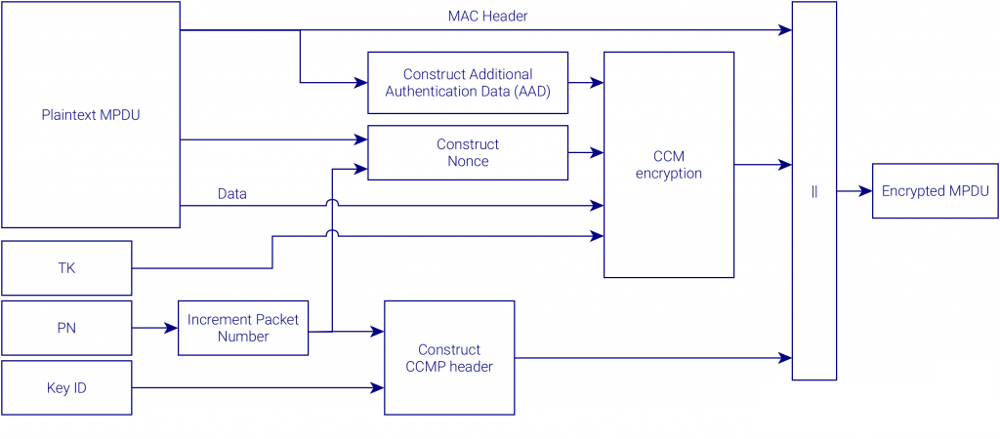
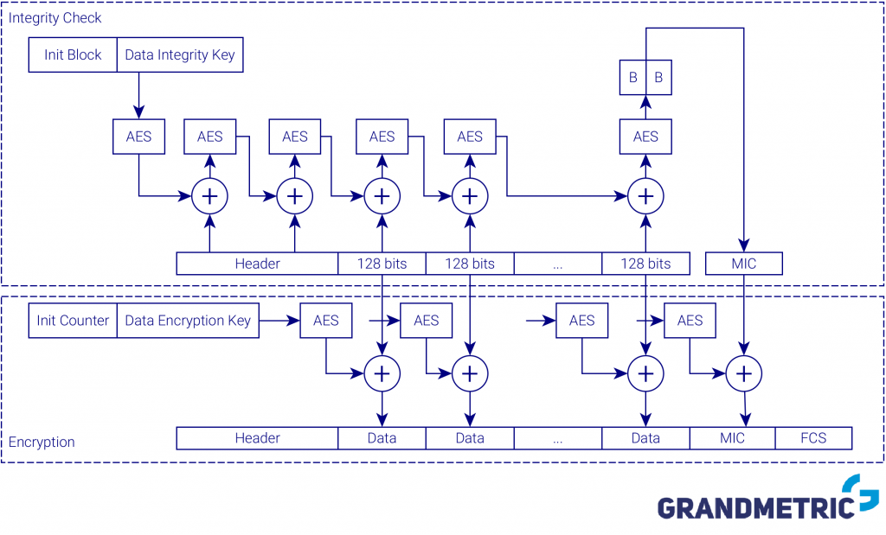

¿Que es WPA2?
WPA2(WiFi Protected Access o Acceso Wi-Fi Protegido 2) fue presentado en 2004 como una actualización del cifrado WPA y mejora tanto la seguridad como el rendimiento de este. La principal diferencia con WPA2 es que utiliza el estándar de cifrado avanzado (AES) en lugar de TKIP.
Hay dos versiones de WPA2: WPA2-Personal y WPA2-Enterprise. WPA2-Personal protege el acceso a la red no autorizado mediante el uso de una contraseña de configuración. WPA2-Enterprise verifica a los usuarios de la red a través de un servidor. WPA2 es compatible con versiones anteriores de WPA.
 Advanced Encryption Standard
AES es un subconjunto del cifrado en bloque de Rijndael desarrollado por los criptógrafos belgas Vincent Rijmen y Joan Daemen, quienes presentaron una propuesta al NIST (Instituto Nacional de Estándares y Tecnología) durante el proceso de selección de AES. Rijndael es una familia de cifrados con diferentes tamaños de clave y bloque. Para AES, NIST seleccionó tres miembros de la familia Rijndael, cada uno con un tamaño de bloque de 128 bits, pero tres longitudes de clave diferentes: 128, 192 y 256 bits.

AES ha sido adoptado por el gobierno de EE. UU. Y ahora se utiliza en todo el mundo. Reemplaza el estándar de cifrado de datos (DES), que se publicó en 1977. El algoritmo descrito por AES es un algoritmo de clave simétrica, lo que significa que se utiliza la misma clave para cifrar y descifrar los datos.
AES está incluido en el estándar ISO / IEC 18033-3 y se ha convertido en el estándar del gobierno federal de EE. UU. A partir del 26 de mayo de 2002, después de la aprobación del Secretario de Comercio de EE. UU. AES está disponible en muchos paquetes de cifrado diferentes, y es el primer (y único) cifrado de acceso público aprobado por la Agencia de Seguridad Nacional de los Estados Unidos (NSA) para información ultrasecreta cuando se utiliza en un módulo criptográfico aprobado por la NSA.
Vulnerabilidades
En octubre de 2017, el investigador postdoctoral Mathy Vanhoef descubrió que las redes protegidas por WPA2 podían ser accedidas mediante un ataque de intermediario para descifrar todos los datos de la víctima y la red Wi-Fi. Esta técnica se conoce como ataque KRACK que consiste en clonar la red de las víctimas y crear una red idéntica, pero fraudulenta, con la que la víctima puede acceder a Internet mientras el hacker tiene acceso a lo que la víctima está visitando y sus dispositivos. (es decir, enrutador, computadora, teléfono inteligente, etc.).